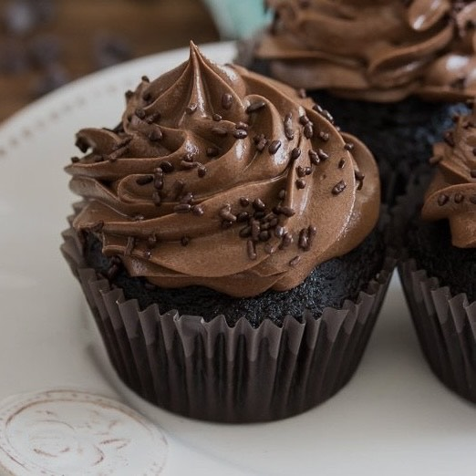
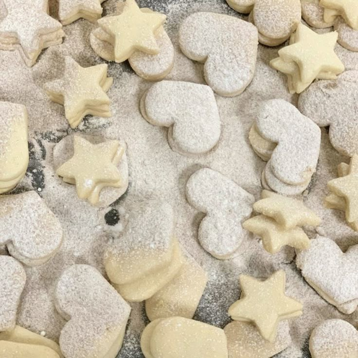
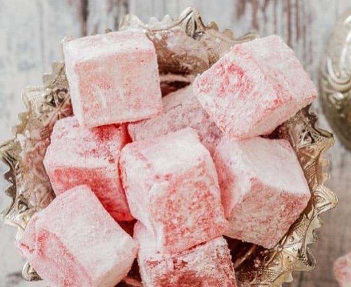

Cokies da Sally Jackson - Percy Jackson

Ingredientes:
- 3 col. de sopa de açúcar cristal
- 2 col. de sopa de açúcar demerara (para não mudar a cor)
- 2 col. de sopa de margarina ou manteiga derretida
- 2 col. de sopa de leite vegetal
- 6 col. de sopa de farinha de trigo
- 1 pitada de bicarbonato
- Sal, corante azul (liquído) e gotas de chocolate a gosto
Modo de preparo:
- Em um recipiente, misture os açúcares com o bicarbonato. Depois adicione o sal, o leite e a manteiga derretida.
- Acrescente o corante (antes da farinha para ele misturar melhor).
- * Separar APENAS uma pequena parte da massa colorida (antes da farinha) e colocar no microondas intensifica o corante, fazendo com que as cores pareçam mais vibrantes e azuis.
- Em seguida, adicione a farinha misturando até ficar homogêneo. Por último, acrescente as gotas de chocolate.
- Leve a massa para gelar por aproximadamente 30 minutos.
- Por fim, divida a massa em pequenas bolinhas em uma forma untada ou forrada com papel manteiga e leve ao forno pré aquecido a 180° por aproximadamente 10 a 15 minutos.
Trecho da receita no livro:
"Ele se levantou na hora que Sally Jackson se aproximava com um prato de biscoitos com gotas de chocolate recém-assados. Por algum motivo, eles eram azuis, e o cheiro era divino. Posso dizer isso porque eu sou divino."
— O Oráculo Perdido
Frases marcantes do livro:
"Viva plenamente e sem medo."
"Pensar demais nas coisas costuma interferir na execução."
"As coisas nem sempre precisam terminar da mesma maneira Apolo. Essa é a parte de ser humano. Nós só temos uma vida, mas podemos escolher que tipo de história queremos ter."
"Com certeza é', disse Percy. 'Alguns dos melhores semideuses começaram explodindo banheiros."
"A jornada é maior do que o destino."
Cupcakes de Pedidos de Desculpas da Libby - Jogos de Herança
Ingredientes:
- *todos em temperatura ambiente
- 2 ovos
- 225g de açúcar
- 113g de manteiga ou margarina
- 127g de farinha de trigo
- 1 col. de chá de essência de baunilha (opcional)
- 43g de cacau em pó
- 1/2 col. de chá de bicarbonato de sódio
- 1/2 xícara de água quente
- 1/4 de col. de chá de sal
Para a cobertura:
- 1 lata de leite condensado
- 2 col. de sopa de chocolate em pó
- 200g de chocolate meio amargo
- 1 col. de sopa de margarina
Modo de preparo:
- Pré-aqueça o forno a 180° e forre uma forma de 12 cupcakes com forminhas de papel.
- Em uma batedeira, bata os ovos, a essência de baunilha e a manteiga até que fiquem bem incorporados.
- Adicione a farinha, o cacau, o açúcar, o bicarbonato e o sal, previamente peneirados e misturados, bata delicadamente para não formar grumos.
- Adicione metade da água, batendo por 20 segundos, raspe as laterais da tigela e adicione o restante da água. Bata por 20-30 segundos ou até que a massa esteja lisa.
- Distribua a massa igualmente em cada forminha.
- Leve para o forno por 18-22 minutos ou até que um palito saia limpo quando espetado no cupcake.
- Retire do forno e deixe esfriar completamente.
Para a cobertura:
- Em uma panela de fundo grosso, misture todos os ingredientes.
- Leve ao fogão em fogo baixo e misturando sempre até o fundo soltar da panela.
Montagem:
- Quando os cupcakes estiverem frios, adicione a cobertura por cima de cada um, usando uma espátula ou saco de confeiteiro para fazer um acabamento bonito.
- Decore como quiser, com raspas de chocolate, polvilhando granulado, cacau, etc.
Trecho da receita no livro:
“Libby fazia cupcakes quando queria pedir desculpas. Quando se sentia culpada. Quando queria dizer "Por favor, não fique brava comigo."
[…] — Vai ser diferente dessa vez — Libby prometeu. — E os cupcakes são de chocolate!”
— Jogos de Herança
Frases marcantes do livro:
"Tudo é um jogo, Avery Grambs. A única coisa que podemos decidir nesta vida é se jogamos para vencer."
"Para você ele deixou toda a fortuna que tinha, Avery, e tudo que ele deixou para nós foi você."
"De repente me senti entrando em uma arena sem ter ideia de quais eram as regras do jogo."
Biscoitos amanteigados da Senhora Erving - Anne with an E
Ingredientes:
- 1 xícara de manteiga amolecida
- 1/2 xícara de açúcar de confeiteiro
- 1 pitada de sal
- 2 xícaras de farinha de trigo
- 1/4 de col. de chá de fermento químico
Modo de preparo:
- Antes de começar a receita, pré-aqueça o forno a 180°.
- Na batedeira, bata a manteiga até ficar macia, depois vá acrescentando o açúcar aos poucos até ficar liso.
- Junte a farinha, o sal e o fermento em outra tigela média, misturando com um garfo.
- Em seguida, faça um furo no meio e acrescente a mistura da manteiga, mexendo até se tornar uma massa homogênea.
- Vire a massa sobre uma tábua ou superfície enfarinhada e a abra com um rolo, deixando com aproximadamente 6 cm de espessura.
- Agora utilize os cortadores de biscoitos e, com uma espátula, coloque os biscoitos em uma assadeira untada apenas de manteiga.
- Espete os biscoitos com um garfo e polvilhe açúcar de confeiteiro sobre eles. Asse em média 15/20 minutos ou até eles começarem a dourar.
Trecho da receita no livro:
“Claro que ficarei para o chá', disse Anne com alegria. 'Estava louca para ser convidada. Estou com água na boca, querendo mais dos deliciosos biscoitos amanteigados de sua avó desde que tomei chá aqui outra vez.”
— Anne de Green Gables
Frases marcantes do Livro:
"Coisas quebradas tem uma certa beleza triste. Depois de anos de histórias e triunfos e tragédias infundidas nelas, elas podem ser muito mais românticas do que coisas novas que não tiveram aventuras."
"Não é o que o mundo tem pra você, é o que você traz ao mundo."
"As pessoas enxergam o que desejam, independente da verdade."
"Os sonhadores mudam o mundo, mentes curiosas nos impulsionam para frente."
"Não é esplêndido pensar em todas as coisas que há para descobrir? Isso só me faz sentir feliz por estar vivo - é um mundo tão interessante. Não seria tão interessante se soubéssemos tudo sobre tudo, não é? Não haveria espaço para imaginação então, haveria?"
Manjar turco - As Crônicas de Nárnia
Ingredientes:
- 1 xic. de chá de água
- 1/2 xic. de chá de suco de laranja
- 2 xic. de chá de açúcar
- 5 col. de sopa de amido de milho
- 2 col. de sopa de xarope de romã
- Açucar de confeiteiro para polvilhar
Modo de Preparo:
- Em uma panela, aqueça meia xícara (chá) de água. Quando a água estiver quente, adicione o açúcar e o suco de laranja e mexa até o açúcar derreter
- Misture o restante da água com o amido de milho.
- Quando o açúcar estiver todo derretido, junte o amido de milho dissolvido e deixe engrossar até ficar com textura de gel (cerca de 15 minutos), mexendo sempre para que não grude no fundo da panela.
- Desligue o fogo e adicione o xarope de romã.
- Em um recipiente refratário quadrado pequeno, forrado com filme plástico, despeje a mistura e deixe esfriar por no mínimo 3 horas em temperatura ambiente.
- Em um recipiente, polvilhe açúcar de confeiteiro e coloque o manjar turco. Corte em cubos e passe cada um no açúcar de confeiteiro por todos os lados.
Trecho da receita no livro:
"- Beber sem comer é triste filho de Adão - disse a rainha. - Que desejas comer?
- Manjar turco, Majestade, por favor - disse Edmundo.
A rainha deixou cair sobre a neve outra gota da garrafa; no mesmo instante, apareceu uma caixa redonda, atada com uma fita de seda verde, que, ao abrir, revelou alguns quilos do melhor manjar turco."
- As Crônicas de Nárnia: O Leão, A Feiticeira e o Guarda-roupa
Frases marcantes do livro:
"Nunca subestime o poder de um livro."
"As coisas boas as vezes levam tempo."
"Algumas vezes você tem que fazer a coisa certa, mesmo que não seja fácil."
"Você nunca pode saber o que poderia ter sido se as coisas tivessem sido diferentes."
"A coragem, filho meu, não é simplesmente uma das virtudes, mas a forma de todas as outras."
"Nunca é tarde demais para se tornar quem você deveria ter sido."
"Ninguém pode dizer o que você pode fazer."